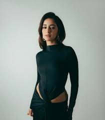
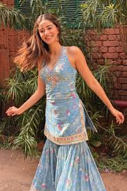
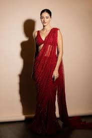
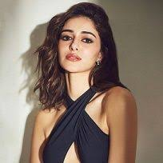

Ananya Pandey
-
Born:
30 October 1998 (age 27 years), Mumbai
- Sibling: Rysa Panday
-
Parents:
Chunky Panday (Father) and Bhavana Panday (Mother)
- Student of the Year 2 (2019)
- Pati Patni Aur Woh (2019)
- Gehraiyaan (2022)
- Dream Girl 2 (2023)
- CTRL (2024)
About
Ananya Panday is an Indian actress who primarily works in Hindi films.
Born to actor Chunky Panday, she began her acting career in 2019 with
roles in the romantic comedies Student of the Year 2 and Pati Patni Aur
Woh. These performances earned her the Filmfare Award for Best Female
Debut.



